Analiza las muestras
A continuación, simularemos lo que ocurre cuando llegan dos muestras de pacientes al laboratorio del hospital. Ponte en la piel de la persona del equipo científico que las recibe.
¿Cómo lo haremos?
Analiza las muestras para identificar las mutaciones impulsoras en cada tumor y poder asignar un tratamiento para cada paciente. Hazlo siguiendo los siguientes pasos:


01.
Revisa los datos de los pacientes, el tipo de cáncer y la exposición a los factores de riesgo
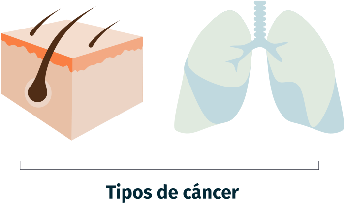
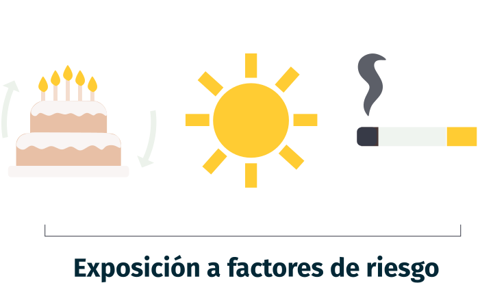
02.
Analiza el ADN de cada tumor para identificar sus mutaciones y qué genes y proteínas están afectados
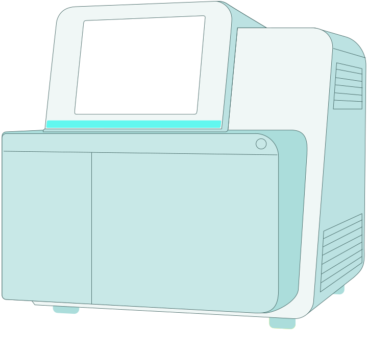

03.
Identifica qué mutaciones son impulsoras del cáncer y si existe un tratamiento específico para cada una
04.
Analiza los resultados y pon a prueba tus conocimientos


 
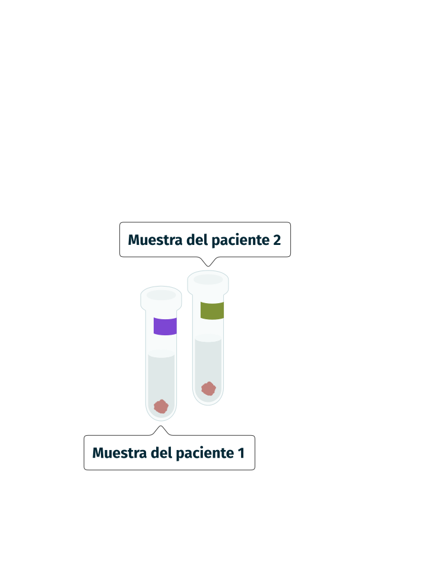
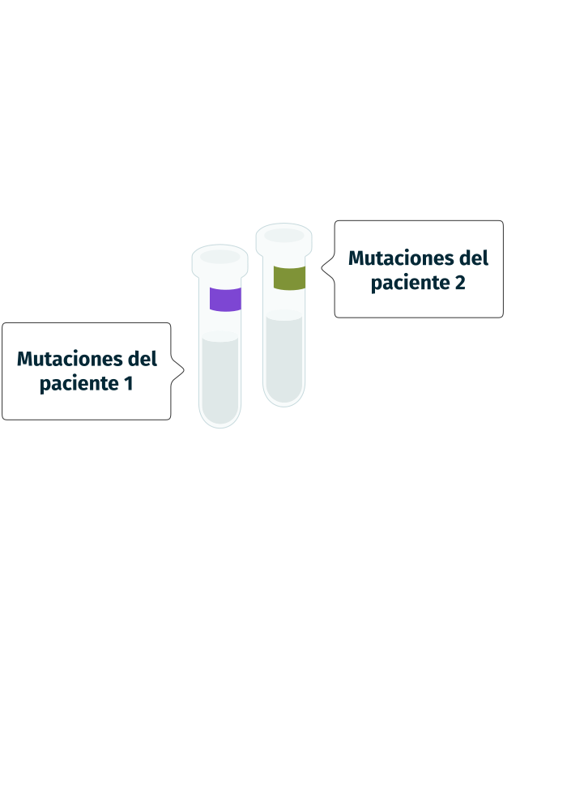
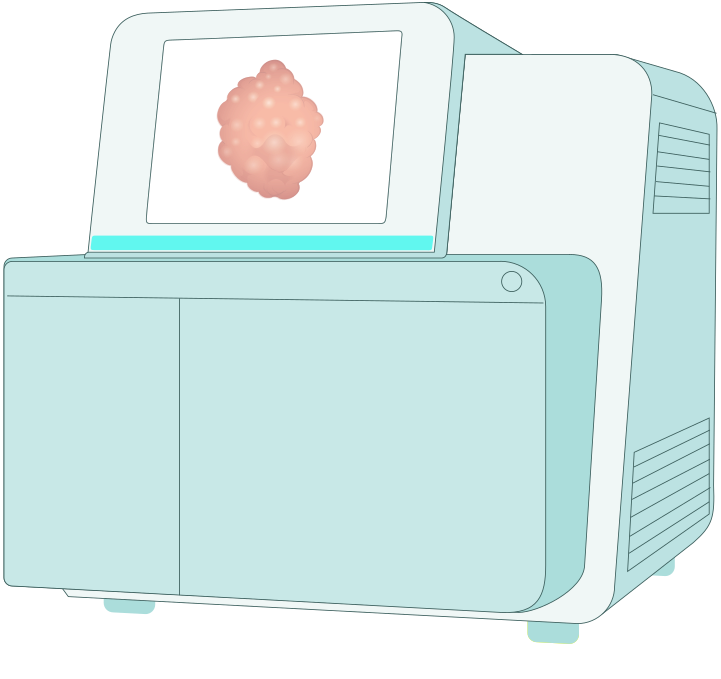
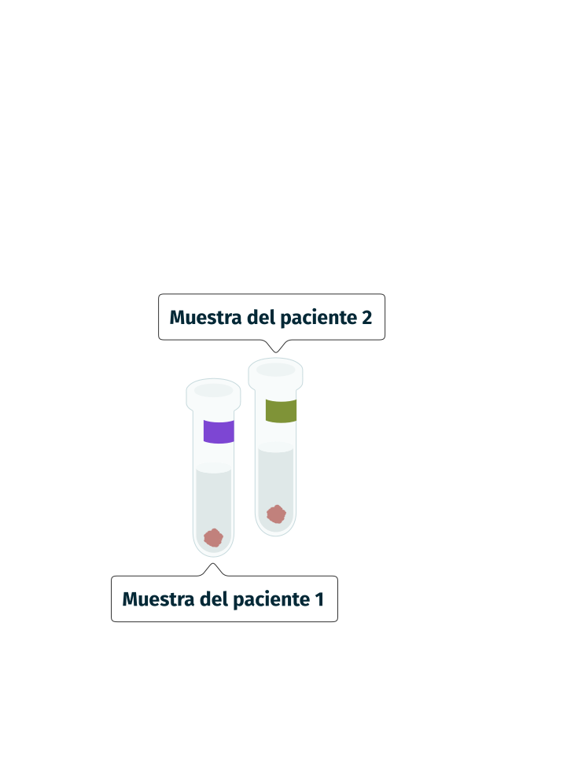
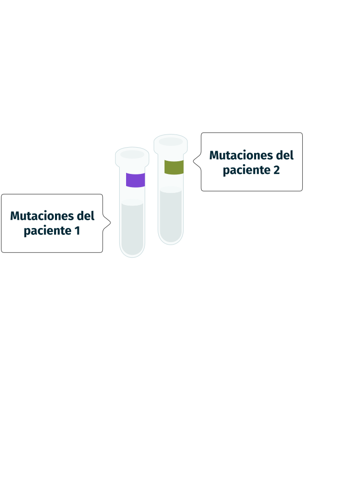
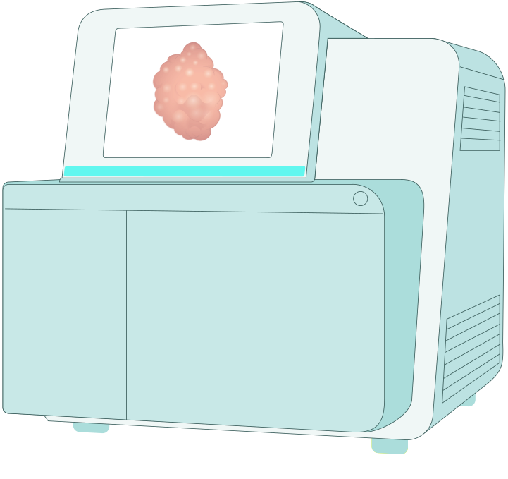